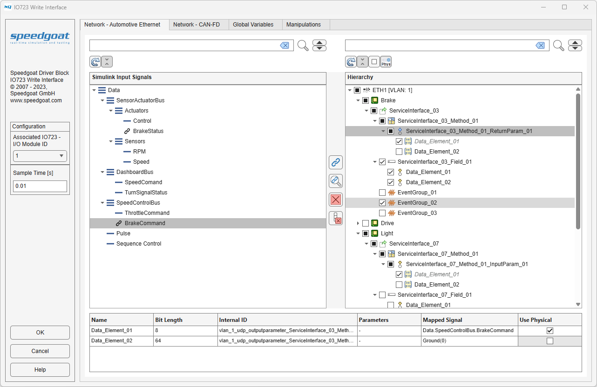
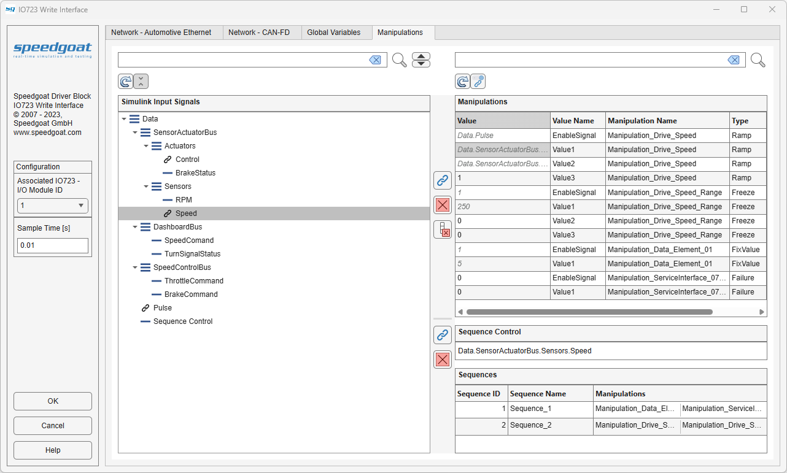

IO723 - Write Interface
IO723 - Write Interface — IO723 Write Interface supporting database visualization and signal mapping
Description
The IO723 Write Interface block executes according to the settings in the IO723 Write Interface application. The execution primarily depends on the signal mapping configured on the parsed database.
Each execution of an IO723 Write Interface block consists of one or more message payloads being updated on the block's software buffer.
Each Write Interface block can be configured using the application, which can be opened by double-clicking the block. The IO723 Write Interface application bridges Simulink® model signals to RBS project signals based on a manual mapping process. The RBS project must be configured using the FL3X Config Software and the Setup block.
As an alternative to configuring the Write Interface block using the application, the IO723 Block Config class can be used to perform the mapping process programmatically.
The IO723 Write Interface block consists of a subsystem dynamically populated with input ports, a dedicated IO723 byte packing block, IO723 Write blocks and the interconnecting lines. Consequently, when an IO723 Interface Write block is placed in a model, the link to the library is broken.
Ports
- Data
Data to be transmitted as a virtual bus structure. Datatypes for the individual signals must comply with the payload size of the designated PDU signal to which the individual signals will be mapped.
Configure Interface
When configuring the interface, there is one tab for each communication protocol. In the RBS project, all available networks corresponding to one protocol are combined into one tab. Each tab can be configured differently from the others. The configuration settings of each tab are combined into one when applying the final configuration settings.

The Simulink Input Signals shows a tree view of the structure of the input Simulink bus signal. The icons indicate if a node is a bus (located at the top of a branch) or a signal (located at the bottom of a branch). The icon changes to a link symbol if a signal is currently mapped.
The Hierarchy shows a tree view of the RBS project structure. The icons indicate the node type in the corresponding protocol structure. Nodes at any level can be enabled using the adjacent checkboxes. Enabling or disabling a node higher in the hierarchy will also automatically change the status of all subordinate nodes.
The Details table shows all the information available to the subordinate nodes of the node currently selected in the Hierarchy tree. No actions are available for this table.
- Search
The Simulink Input Signals and the Hierarchy tree each have their own Search field available. Any nodes found will be highlighted in the respective tree. You can cycle through highlighted nodes using the up and down arrow buttons next to the respective search button. Clear the search field to clear the node highlighting.
- Refresh
The Refresh button will update both the trees. Refreshing the Simulink Input Signals tree will update the structure of the input Simulink bus signal of the Simulink model. Refreshing the Hierarchy tree will update the structure of the RBS project configured in the connected IO723 Setup block.
- Expand All Nodes
The Expand All Nodes state button will expand or collapse all nodes in the respective tree depending on the state of the button.
- Check All Nodes
The Check All Nodes state button will check or uncheck all nodes in the Hierarchy tree depending on the state of the button.
- Check Selected Use Physical
The Check Selected Use Physical state button will check or uncheck all Use Physical properties of selected nodes in the Hierarchy tree depending on the state of the button. Nodes with Use Physical enabled will process mapped Simulink Input Signals as physical values and if disabled process them as a raw byte array. The physical attributes for processing a signal with Use Physical enabled are defined in the RBS project.
- Map Signals
The Map Signals button links signals from the two trees. To do this, one signal must be selected in the Simulink Input Signals tree, and one in the Hierarchy tree. Only one signal from each tree can be selected. Only signals can be mapped and they are always located at the bottom of a branch.
- Highlight Mapped Signals
The Highlight Mapped Signals button shows all signals in the Hierarchy tree that have been mapped to a specific Simulink Input Signals signal. You can cycle through the nodes found using the up and down buttons next to the search field of the Hierarchy tree.
- Clear Selected Mapping
The Clear Selected Mapping button resets all the highlighted signals in the Hierarchy tree to the default 'Ground(0)'.
- Clear Entire Mapping
The Clear Entire Mapping button resets all the signals in the Hierarchy tree to the default 'Ground(0)'.
Configure Global Variables
When configuring the interface, use the tab for configuring values for global variables. In the RBS project, all available global variables are combined into one tab.

The Simulink Input Signals shows a tree view of the structure of the input Simulink bus signal. The icons indicate if a node is a bus (located at the top of a branch) or a signal (located at the bottom of a branch). The icon changes to a link symbol if a signal is currently mapped.
The Global Variables shows a table view of the global variables defined in the RBS project structure. Access to altering the value of a global variable using a signal can be enabled using the adjacent checkbox.
- Search
The Simulink Input Signals tree and the Global Variables table each have their own Search field available. Any nodes or rows found will be highlighted in the respective tree or table. You can cycle through highlighted Simulink Input Signals nodes using the up and down arrow buttons next to the respective search button. Clear the search field to clear the node or row highlighting. Nodes and rows are searched based on their node name or Name only.
- Refresh
The Refresh button will update both the tree or table. Refreshing the Simulink Input Signals tree will update the structure of the input Simulink bus signal of the Simulink model. Refreshing the Global Variables table will update the structure of the RBS project configured in the connected IO723 Setup block.
- Expand All Nodes
The Expand All Nodes state button will expand or collapse all nodes in the Simulink Input Signals tree depending on the state of the button.
- Check All Variables
The Check All Variables state button will check or uncheck all variables in the Global Variables table depending on the state of the button.
- Map Signals
The Map Signals button links signals from the tree to the table. To do this, one signal must be selected in the Simulink Input Signals tree, and one variable in the Global Variables table. Only one signal from the Simulink Input Signals tree can be selected. Multiple variables can be selected in the Global Variables table, also by highlighting them using the search function.
- Clear Selected Mapping
The Clear Selected Mapping button resets all the highlighted or selected variables in the Global Variables table to the default 'Ground(0)'.
- Clear Entire Mapping
The Clear Entire Mapping button resets all the variables in the Global Variables table to the default 'Ground(0)'.
Configure Manipulations
When configuring the interface, there is a tab for enabling and configuring values of manipulations during runtime. In the RBS project, all available manipulations and sequences are combined into one tab. Manipulations can be configured only once for each associated IO723 - I/O Module ID. If two IO723 Write Interface applications are configured for the same Module ID, only the one opened first has a manipulations tab.

The Simulink Input Signals shows a tree view of the structure of the input Simulink bus signal. The icons indicate if a node is a bus (located at the top of a branch) or a signal (located at the bottom of a branch). The icon changes to a link symbol if a signal is currently mapped.
The Manipulations shows a table view of the manipulations defined in the RBS project structure. The individual manipulations can be enabled or disabled by setting the Value of Value Name 'EnableSignal' to '1' or '0' respectively. Alternatively the 'EnableSignal' can be mapped to a Simulink Input Signal from the tree view. Also Value from rows with Value Name 'ValueX' can be set to any uint32 scalar, rather than the default one defined in the RBS project, or mapped to a Simulink Input Signal.
- Search
The Simulink Input Signals tree and the Manipulations table each have their own Search field available. Any nodes or rows found will be highlighted in the respective tree or table. You can cycle through highlighted Simulink Input Signals nodes using the up and down arrow buttons next to the respective search button. Clear the search field to clear the node or row highlighting. Nodes and rows are searched based on their node name or Manipulation Name only.
- Refresh
The Refresh button will update both the tree or table. Refreshing the Simulink Input Signals tree will update the structure of the input Simulink bus signal of the Simulink model. Refreshing the Manipulations table will update the structure of the RBS project configured in the connected IO723 Setup block.
- Expand All Nodes
The Expand All Nodes state button will expand or collapse all nodes in the Simulink Input Signals tree depending on the state of the button.
- Enable Value Mapping
The Enable Value Mapping state button controls whether Value can be edited or mapped in the Manipulations table. When the button is disabled, the default Value from the RBS project are used. In this state, only rows with Value Name 'EnableSignal' are available.
- Map Signals
The Map Signals button links signals from the tree to the table. To do this, one signal must be selected in the Simulink Input Signals tree, and one row in the Manipulations table. Only one signal from the Simulink Input Signals tree can be selected. Multiple rows can be selected in the Manipulations table, also by highlighting them using the search function.
- Clear Selected Mapping
The Clear Selected Mapping button resets all the highlighted or selected rows in the Manipulations table to their default Value from the RBS project or to '0'.
- Clear Entire Mapping
The Clear Entire Mapping button resets all the rows in the Manipulations table to their default Value from the RBS project or to '0'.
- Map Sequence Control
The Map Sequence Control button links a signal from the tree to the Sequence Control. To do this, exactly one signal must be selected in the Simulink Input Signals tree.
The value of the signal mapped to Sequence Control, controls which sequence is active if any. Sequences are activated by matching their Sequence ID. To use the individual manipulations instead of any of the sequences, the Sequence Control value can be set to '0'. The value of Sequence Control may also be edited to any value inside the uint32 range instead of mapping it.
- Clear Sequence Control Mapping
The Clear Sequence Control Mapping button resets the Sequence Control to '0'.